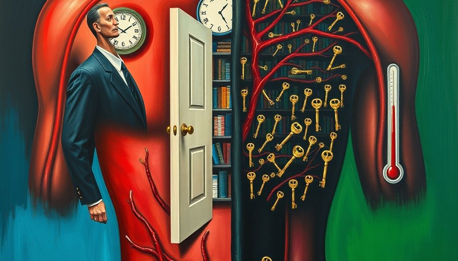
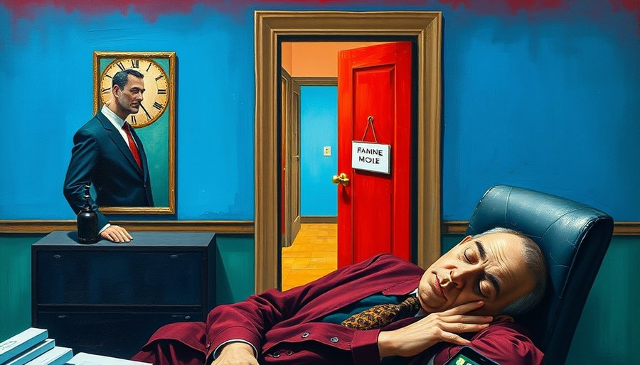

每年入秋，体重计就开始不讲道理地爬升。饭量明明和夏天差不多，甚至因为天凉胃口好一点，但总热量摄入并没有显著增加。节食的人更委屈：每天卡着热量上限，碳水脂肪蛋白质都算得清清楚楚，秤上的数字却像被焊住了。好不容易掉两斤，一顿聚餐就加倍奉还。
常规解释是“天冷吃得多、动得少”。但很多人的运动频率入秋后并没有减少，热量控制甚至更严格，体重依然上涨。热量差模型在这里碰到了一个它解释不了的对手：身体不是一个简单的热量容器，它有一套主动调节储能优先级的信号系统。而这套系统的总开关，是胰岛素。
胰岛素是人体最强的储能激素，主业是把血糖转成脂肪囤起来。它时刻在督促身体：多转化，多储存。所以关键变量从来不是“吃进去多少热量”，而是“胰岛素总量下不下得来”。同样的热量摄入，只要胰岛素总量居高不下，脂肪就照涨不误，卡路里账本在这里是失效的。这就是为什么有人夏天怎么吃都不胖，入秋后喝凉水都长肉——不是凉水有热量，是身体在换季时调高了储能的优先级。
传统习俗里秋天要“贴膘”，本意是应对即将到来的食物匮乏。但现代人食物充足，身体却还按老规矩办事。于是贴膘从生存策略变成了健康负担。更麻烦的是，当胰岛素敏感性下降，哪怕你吃的是同样一碗饭，身体从中提取和储存脂肪的效率都会提高——它不是在处理热量，而是在执行季节指令。换句话说，你吃进去的热量有多少变成脂肪，取决于胰岛素这个“调度员”接到了什么季节指令，而不是你筷子夹了多少。

瑞典科学家对上千人的胰岛素测试发现，胰岛素敏感性存在明显的季节性节律：秋冬显著低于春夏。敏感性低意味着什么？血糖对胰岛素“听调不听宣”——本来十份胰岛素就能压住的血糖，现在要上百份才能压住。身体只能代偿式超量分泌胰岛素。
血糖是压下去了，但降糖只是胰岛素的顺手活，储能才是主业。压完血糖，它立刻加倍把热量转成脂肪。于是秋天囤得比夏天猛得多，哪怕吃的东西一模一样。研究发现，即便在相同体重和饮食条件下，秋冬的胰岛素水平也比春夏高出不少，这意味着身体在秋天会自动进入“节能储脂”模式。
论文给出的统计显著变量有两个：阳光和户外温度。阳光越少、温度越低，敏感性越低。熊的冬眠开关，也是靠光照和气温启动的。我们的身体保留着同样的古老程序：日照缩短、气温下降，它就判断“饥荒季要来了”，于是调高储能效率，调低燃脂意愿。这不是你的错，是数百万年进化写进基因的生存策略。
体力活动是少数能对抗这个趋势的变量：运动越多，敏感性越高。肌肉收缩时可以直接摄取血液中的葡萄糖，不依赖胰岛素，相当于给身体开了一条“燃糖通道”。这也是为什么中年人减肥光靠节食和控热量不够，必须让身体动起来。剧烈运动不必，要警惕心源性猝死的风险，适量就好。阳光和运动，本质上是在告诉身体：现在不是饥荒季，不用急着囤。
现代人常年待在恒温室内，白天见光少，晚上屏幕光多，这套季节感知系统几乎处于失灵状态。身体收不到明确的“夏季”信号，胰岛素敏感性便长期偏低，脂肪储存的开关一直半开着。这也是为什么肥胖率在最近几十年飙升——不是我们突然变得贪吃，而是我们给身体发送的信号，让它误以为世界永远在入冬。

这里藏着一个更扎心的错位：节食是在输入端做功，而贴膘的指挥部在信号端。人脑算的是热量差，身体算的是季节、光线和能量环境——它只判断“现在是不是该为饥荒做准备”，根本不看人的减肥计划。
你越饿，它越警觉。热量缺口一大，身体立刻拉响警报：环境能量不足，必须降低代谢、提高储能效率。胰岛素更不肯下去，脂肪分解被抑制，肌肉流失却加速。用意志力对抗一个按万年进化写好的储能程序，输的通常是意志力。这解释了为什么节食初期体重下降，很快就进入平台期，一恢复正常饮食立刻反弹——身体在饥荒模拟中练就了一身“囤脂好本领”。更糟糕的是，反弹后的体重往往超过原来，因为身体在饥荒结束后会超额储存，以备下一次“饥荒”。这也是为什么单纯靠饿瘦下来的人，往往看起来“松垮”——肌肉流失了，脂肪却顽固地留着。身体在饥荒信号下，优先分解耗能的肌肉，保留高能的脂肪。
精力问题也是同一套逻辑。胰岛素敏感性高的人，身体的储能待机机制启动得少，不容易昏昏沉沉；敏感性低的人，哪怕睡够了，后台也一直挂着“去囤粮”的信号，人像一部永远在跑后台程序的手机，早上醒来就觉得累。精力旺盛不是天赋，是代谢信号更干净。餐后血糖波动是另一个精力杀手：胰岛素敏感性低时，吃一顿精制碳水，血糖飙升，身体紧急分泌大量胰岛素，又把血糖砸到谷底，人立刻犯困、注意力涣散。那些中午不趴桌也清醒的人，往往不是因为睡得更多，而是他们的胰岛素反应更平稳。
到了三十岁以后，胰岛素敏感性整体走下坡，管理代谢信号就变成和吃饭一样日常的事——低GI饮食、多户外、少熬夜、不吃夜宵，本质都是在压低胰岛素总量，而不是在跟自己过不去。这些动作不是养生玄学，是给身体发送“现在是丰饶季”的信号，让它把储能的警戒级别调低。
当然，不是每个人入秋都胖。有人基础代谢率高，有人天生胰岛素敏感性好，有人运动量大、户外时间多，这些人的季节性波动不明显。饮食结构也关键：同样热量，精制碳水和糖刺激胰岛素猛升，而低GI食物让胰岛素平缓。所以“同样的热量”这个前提本身就要打个问号——热量数字一样，但引发的胰岛素反应可以天差地别。一些采用生酮或间歇性断食的人，总热量并不低，但体重却能下降，正是因为这些饮食模式压低了胰岛素总量，让脂肪有机会出仓。
但整体趋势是明确的：秋冬光照减少、户外活动下降，胰岛素敏感性降低是统计上显著的现象。现代生活方式把这个趋势放大了：我们常年待在恒温室内，白天见光少，晚上屏幕光多，深夜还在进食。压力、睡眠不足也会升高皮质醇，皮质醇直接拮抗胰岛素，进一步降低敏感性。身体被这些信号搞糊涂了——它以为一年到头都是需要囤脂的冬季。
当然，这并不是说热量完全不重要。热量过剩依然是肥胖的必要条件之一。但同等热量下，胰岛素环境决定了这些热量是去供能还是去储存。管理热量而不管理胰岛素，就像只关水龙头却不修漏水的水管。
于是，很多人不是吃得太多，而是身体一直在替他们做“该囤了”的决定。重新看见这一点，比任何减肥法都重要。控制体重的钥匙，不在卡路里表格里，而在你给身体发送的季节信号里：阳光、睡眠节律、饮食升糖速度、日常活动量。这些信号对了，胰岛素才肯退场，脂肪才肯出仓。
回到开头那个问题：同样的热量，夏天吃不胖，秋冬全囤下。不是因为秋冬的你更馋，而是你的身体在按一套比你古老得多的逻辑，替你做了一季的仓储决策。你到底是吃得太多，还是胰岛素一直在替你决定？理解这套逻辑，不是为了给长胖找借口，而是为了找到真正有效的干预点。与身体合作，而不是与它对抗，或许才是成年人最清醒的体重策略。
尾声
一个容易被忽略的事实是：胰岛素敏感性不仅影响体重，也影响长期健康。持续高胰岛素水平是代谢综合征的核心驱动因素，与糖尿病、心血管病、某些癌症风险相关。把体重管理从“少吃多动”的简单教条，升级为“管理代谢信号”，可能是成年人最划算的健康投资之一。它不需要极端自律，只需要理解身体真正的语言。
小汪老师的成长观察笔记